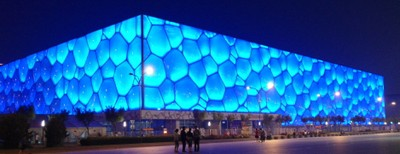

Otro sistema resistente a cargas laterales [LO]
Un sistema resistente a cargas laterales que es conocido pero que no encaja en las definiciones de esta tabla. Otros sistemas incluyen estructuras a tensión, estructuras laminares, placas dobladas,tubos y otros sistemas estructurales complejos para edificios muy altos.

Centro nacional de natación Beijing, China (también conocido como El Cubo) es un marco (3-D) ensamblado a partir de 22,000 tubos de acero soldados a 12,000 nodos; Esta es una estructura única (D. Willms)

Estructura de cercha en 3D, Science World, Vancouver, Canada (S. Brzev)